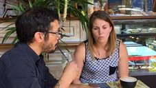
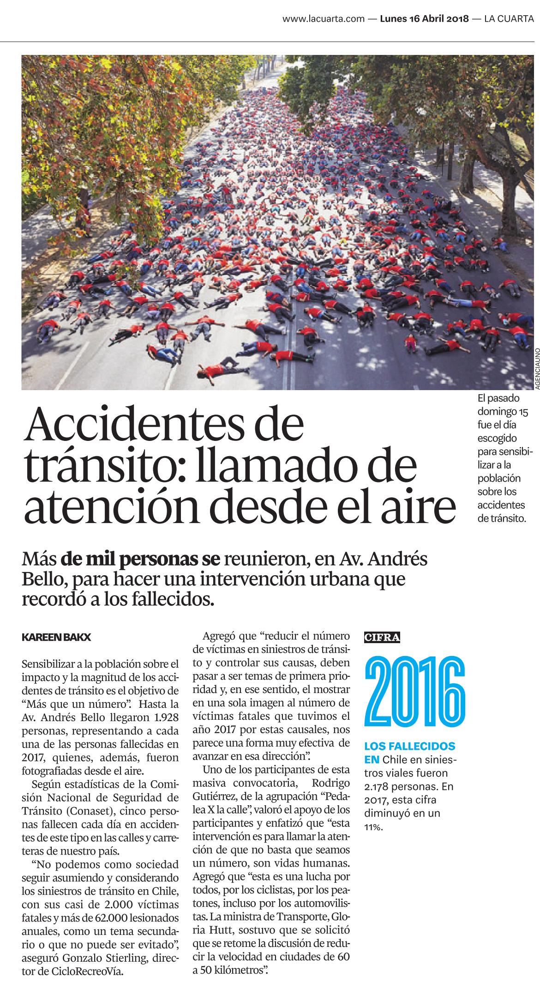
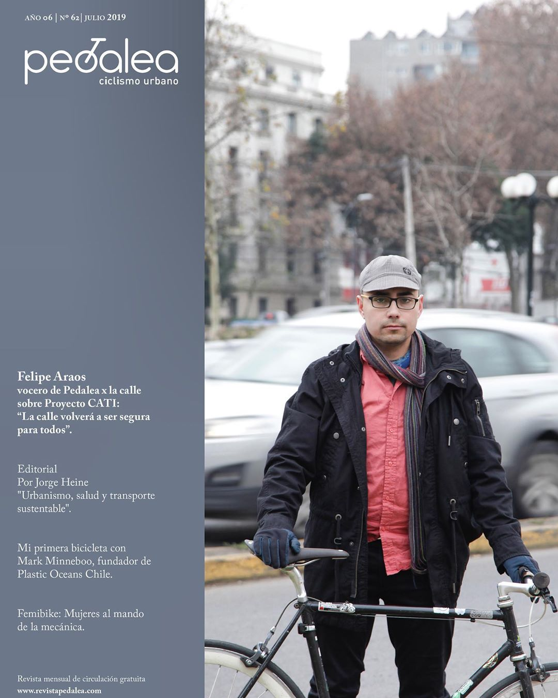
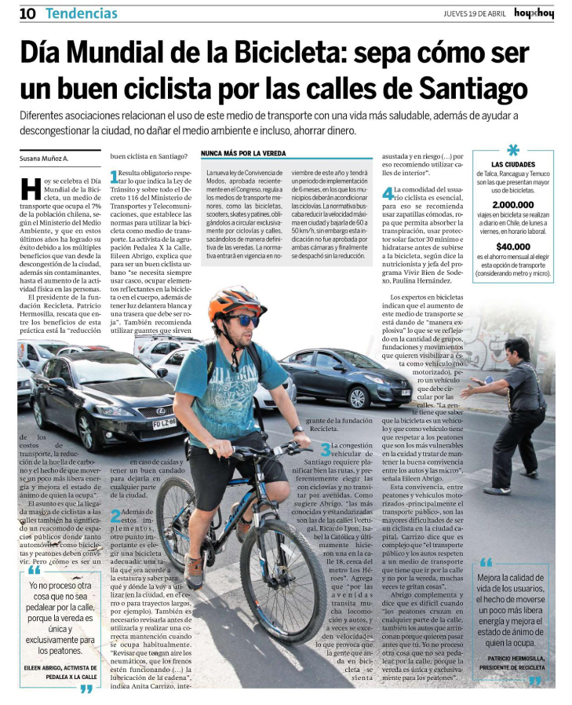
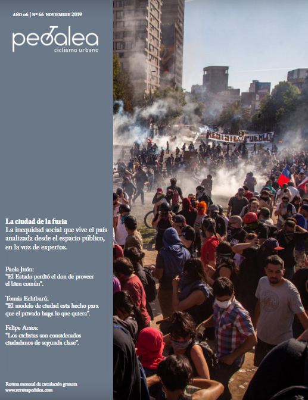
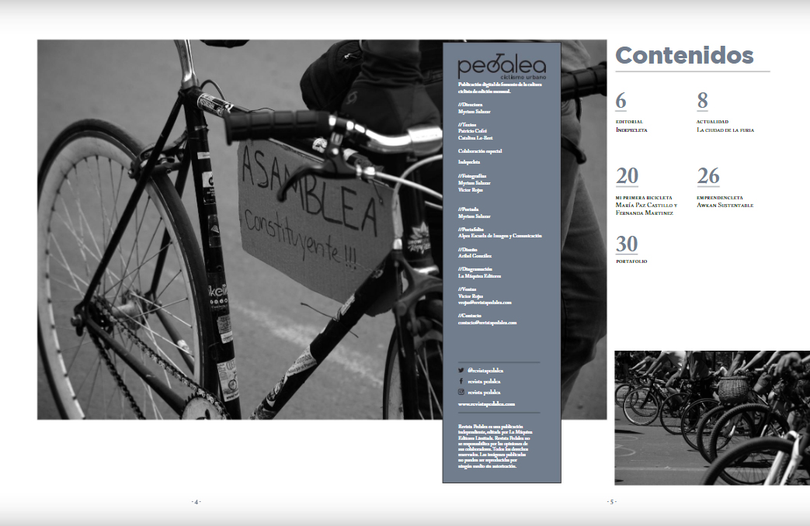
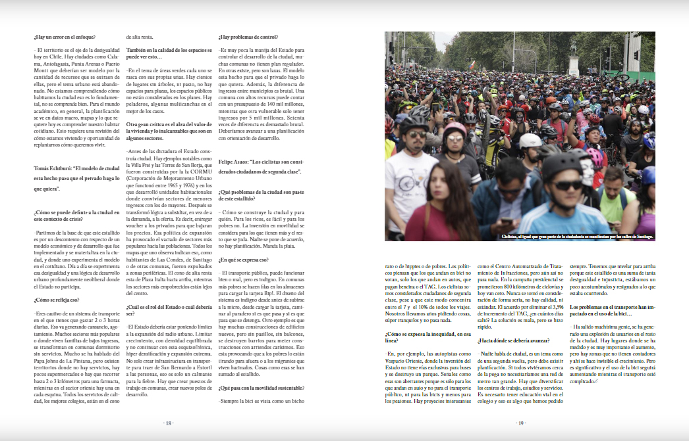

Prensa
Nuestra voz en los medios · 2016—2019A medida que la bicicleta y la seguridad vial ganaron espacio en el debate público, distintos medios buscaron nuestra voz: radios, canales de televisión, diarios y revistas especializadas nos consultaron como una de las voces ciudadanas de la movilidad urbana.
Reunimos aquí esas apariciones, agrupadas por tema. La mayoría gira en torno a la gran discusión de la época —la reducción de la velocidad máxima—, pero también nos buscaron para hablar del Día de la Bicicleta y, hacia el final, de la ciudad durante el estallido social.
La velocidad y la Ley de Convivencia Vial en los medios
En el contexto del 5° Foro Mundial de la Bicicleta, que se realizaría en Santiago entre el 31 de marzo y el 5 de abril de 2016, estuvimos en Radio ADN conversando sobre el proyecto de ley que modificaría la antigua Ley de Tránsito. Explicamos los ejes que las organizaciones ciclistas veníamos empujando: la disminución de la velocidad máxima permitida en zonas urbanas, la creación de una zona de detención adelantada para ciclistas frente a los semáforos, la certificación de las ciclovías por parte del Ministerio de Transportes y la posibilidad de que las personas mayores y la niñez menor de 7 años circularan por la vereda a velocidad prudente.
No se conserva el registro del audio de la entrevista. Lo que sí sobrevive es el documento que le dio sustento: las observaciones finales que las organizaciones de la plataforma del Foro Mundial de la Bicicleta le presentamos al Ministerio, con las que buscábamos que la reforma tuviera un contenido de fondo y no solo cambios cosméticos.
Ver el documento con las observaciones de las organizaciones (2015) No se conserva el audio de la entrevista.La noche del martes 14 de noviembre de 2017, el noticiario central de Canal 13 exhibió un reportaje sobre la modificación a la velocidad máxima que se tramitaba en el Congreso. En la voz de los ciclistas participó uno de nuestros integrantes.
El reportaje recordaba el origen del problema: en 2002, Chile subió la velocidad máxima urbana de 50 a 60 km/h y, tras ese cambio, el número de accidentes aumentó cerca de un 30% y las muertes, un 25%. A eso se sumaba que cada vez más personas se movían en bicicleta, con el riesgo consiguiente. El proyecto que se discutía buscaba, justamente, devolver el límite a los 50 km/h.
El video ya no está disponible en el sitio de T13. Lo estamos resubiendo a YouTube.
Tras el rechazo del Senado a bajar la velocidad de 60 a 50 km/h, y luego de la manifestación y de la entrega de una carta en las sedes de la UDI y de RN, conversamos con El Ciudadano sobre esta y otras discusiones en torno a la Ley de Convivencia Vial.
La entrevista se transmitió en vivo por Facebook. Como esa plataforma elimina las transmisiones en directo a los pocos meses, el video ya no está disponible; conservamos solo esta imagen del momento.

El domingo anterior habíamos realizado la acción #MasQueUnNumero1928: mediante una foto aérea, buscábamos evidenciar —con cuerpos tendidos sobre el pavimento— la cantidad de personas que perdieron la vida en siniestros viales. El Diario La Cuarta publicó al respecto y nos consultó nuestro parecer.
“Esta intervención es para llamar la atención de que no basta con que seamos un número: son vidas.”
Detrás de cada cifra hay una familia. Esa fue siempre la idea de fondo de la campaña por bajar la velocidad: discutíamos números, pero hablábamos de personas.
La nota original ya no está disponible en línea; se conserva este recorte.
En su edición n° 62, Revista Pedalea nos consultó sobre el Proyecto CATI, el sistema automatizado de fotorradares. Nuestro vocero, Felipe Araos, resumió la postura del colectivo: la ley ya había fijado el límite, pero sin fiscalización nada cambiaría de verdad en la calle.
“La reducción de velocidad es un pilar de la Ley de Convivencia Vial, pero si no hay fiscalización no sirve de nada. La calle volverá a ser segura para todos.”
El CATI conectaba con una vieja deuda: los mismos fotorradares que la reforma de 2002 había limitado. Esa historia, de punta a cabo, se cuenta en Reducción de velocidad.
Leer en Revista PedaleaEl Día de la Bicicleta

Por el Día Mundial de la Bicicleta, el diario HoyxHoy nos contactó para entregar algunos consejos sobre cómo ser un buen ciclista por las calles de Santiago. La nota abordaba los beneficios de la bicicleta —para la salud, el medio ambiente, la descongestión de la ciudad y también el bolsillo.
En ese entonces, según el Ministerio del Medio Ambiente, cerca del 7% de la población chilena ya usaba la bicicleta como medio de transporte. Aportamos recomendaciones prácticas de convivencia y seguridad, muchas de las cuales quedaron reunidas en nuestra sección de Consejos.
Leer la nota en HoyxHoyTambién en el marco del Día de la Bicicleta, estuvimos en el programa Puente B, conversando sobre movilidad urbana, convivencia vial y la vida cotidiana sobre dos ruedas: cómo se pedalea la ciudad, qué se necesita para hacerlo con seguridad y por qué cada vez más personas se suben a la bici para moverse por Santiago.
Ver el video de Puente B en FacebookLa ciudad en disputa: movilidad y estallido
En plena revuelta social, Revista Pedalea nos consultó por nuestra mirada sobre la movilidad durante el estallido. Chile llevaba semanas expresándose en marchas y manifestaciones —y también sufriendo la represión, con muchas personas heridas y muertas—, y la inequidad social se había tomado el centro del debate: educación, salud, pensiones, salarios.
Nos preguntaron qué pasaba en los territorios, cómo se reflejaba el malestar en el espacio público y qué lugar tenía la calle en esa disputa. Para un colectivo que siempre entendió la movilidad como parte de una pelea más amplia por el derecho a la ciudad, era una conversación natural. Quedó recogida en el reportaje «La ciudad de la furia».



Recopilación de apariciones de Pedalea X la Calle en medios de comunicación (2016–2019). Varias notas ya no están disponibles en los sitios originales; en esos casos conservamos las imágenes de la publicación. Haz click en cualquier imagen para ampliarla.